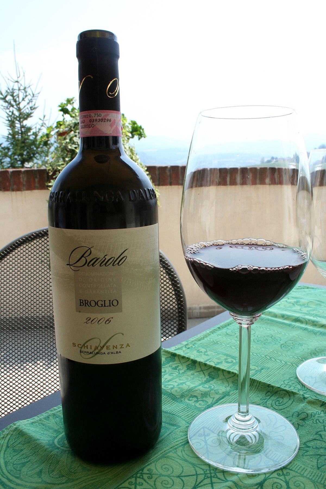

 Barolo is a red wine produced in the Piedmont region of Italy.The wines are made from Nebbiolo, a small, thin skinned red grape varietal generally high in acid and tannins. In Piedmont, Nebbiolo is one of the first varietals to undergo budbreak and last to be picked, with harvest generally taking place in late October. Barolo wines must be solely composed of Nebbiolo, no exceptions.
TASTING NOTES
- Body: Medium to Full
- Acidity: Medium
- Fruit: Medium to Full
- Taste: Bright cherry and tobacco
- The Wine Of Kings: Perhaps the most impressive distinction that Barolo holds over most other Italian red wines is how it has impressed royalty over the years. In particular, Barolo was an enormous favourite of King Albert of Savoy, who is reputed to have purchased the Verduno Castle solely because it housed General Staglieno, who has a reputation for creating some of the best Barolos of the era.
- A Cold Therapy: Barolo has actually historically been used to combat that most common of winter afflictions – the cold. Best of all, there is some evidence to show that it actually works too.
- It Was Perfected in the 1800s: Barolo has a reputation for being one of the oldest wines in the world and the Nebbiolo vines have been cultivated and used to create the drink for hundreds of years. However, it was not until the 1800s that Barolo became the wine that we know it to be today. Much of the credit for this lies with the Count of Cavour, who may be better-known to you as the person behind the Italian Unification.